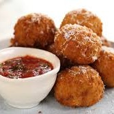
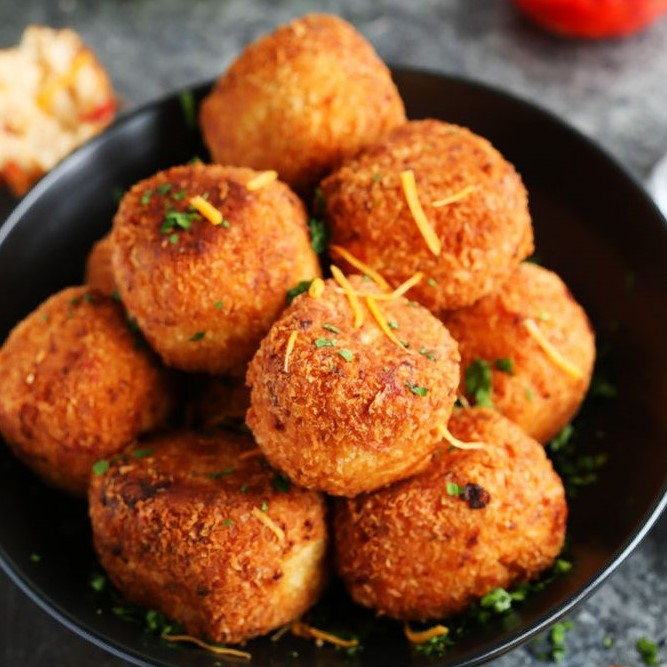

Difficult Diners Starters
This Month is Italian Month, and we have chosen the aranchini for starters. Whether your plating up 'haute cuisine' or want something perfect as a sharing platter. Aranchini is where it's at. Aranchini can be vegetarian, we have also a vegan/dairy free option and gluten free options for you to try.
Arancini
The name Arancini comes from 'Arancia' the word for orange as they were originally resemmbled the fruit - golden and roughly the same size. There are many different stories about the origin of how what can't mistaken is the huge part that Arancini play within the Italian nation's street food culture. It is much more typical of southern italy so think sunshine, sicilian oranges and an apertif of limoncello if it takes your fancy.

Arancini(V)
Ingredients:
- 700g Pre-Made Risotto
- 150g mozzerella, drained and chiopped
- 150g semi-dried tomatoes, chopped
- 1 small bunch of fresh oregano, leaves picked and chopped
- zest of 1 lemon
- 150g plain flour
- 3 large free-range eggs, beaten
- 300g fine dried breadcrumbs
Recipe:
- To form the arancini, scoop a portion of the cooled risotto into your hand. Spoon a tablespoon of the filling mixture into the centre and wrap the risotto around it to seal completely. Repeat with the remaining risotto and filling..
- For the pane, place the flour, egg and breadcrumbs in separate shallow bowls. Carefully dip each arancini ball in the flour, shaking off any excess, then the egg, and finally the crumbs, ensuring the rice is completely coated. Set aside..
- Pour the vegetable oil into a deep, heavy-bottomed saucepan and place over a high heat. To test the oil is ready, drop in a few breadcrumbs – if they sizzle and float, it is ready. Carefully lower in the arancini with a slotted spoon, in batches of four, and deep-fry for 8 minutes, or until golden and crispy. Transfer to a double layer of kitchen paper to drain.
- Serve Option: ...with fried capers, oregano sprigs, basil leaves, grated parmesan and an arrabiata
An example of the arancini a fun way to present arancini...
Arancini (Dairy Free)
Dairy Free Swap:
The only ingedient that involves dairy is the risotto. To beable to enjoy this just skip the parmesan and use some nutritional yeast flakes for to get the same cheesy flvour. Simple.

Arancini (Gluten Free)
Gluten Free Swap:
Simply swap out plain flour and breadcrumbs for buckwheat flour and either crumbled rice cakes, ground almonds or even your favourite crisps all bashed up. Be adventurous.
.jpg)